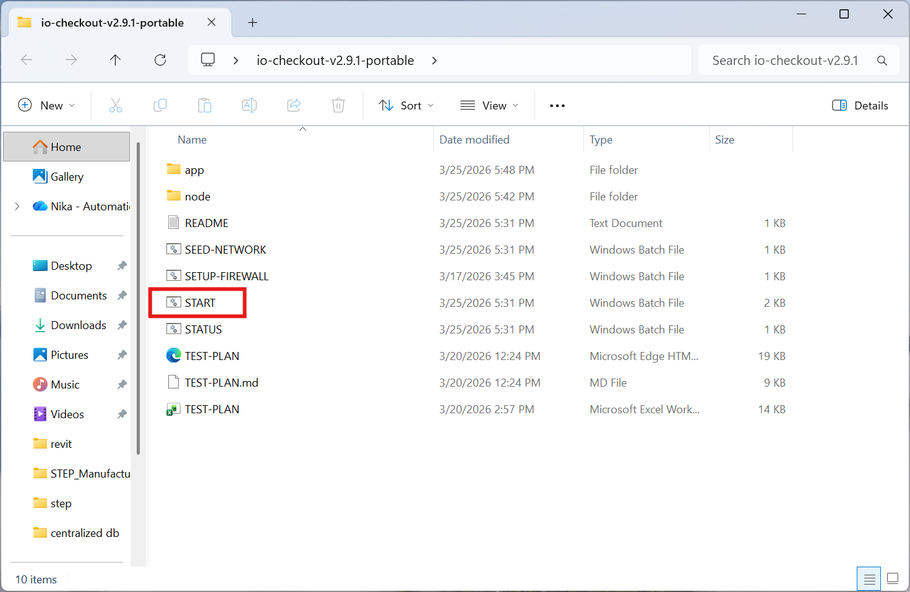
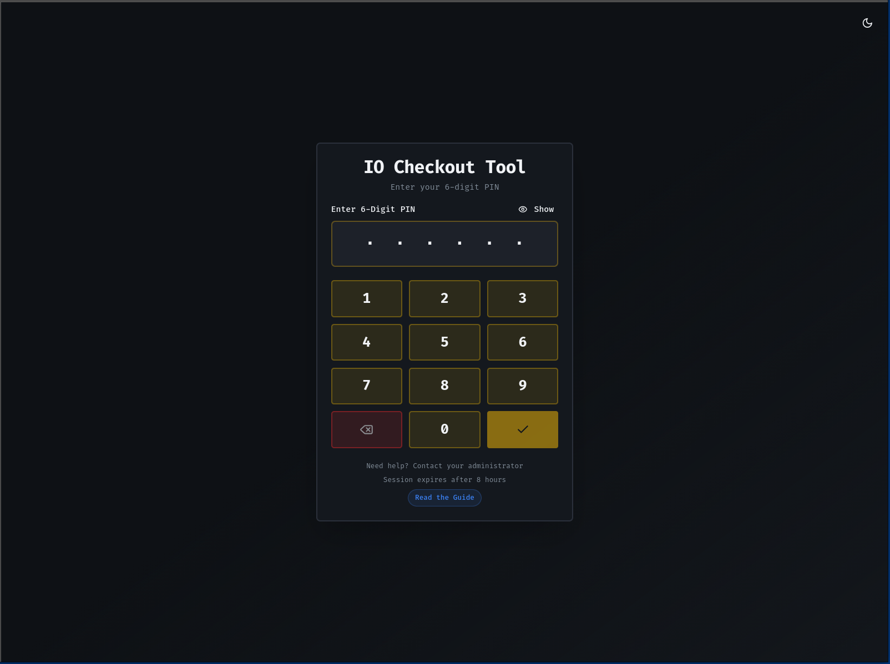
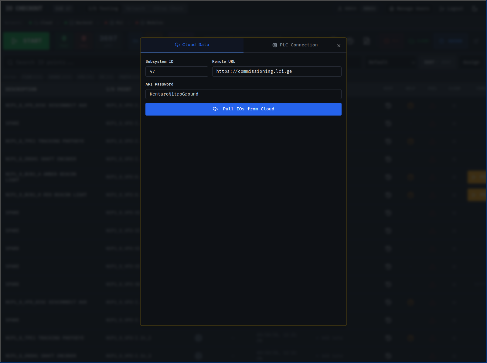
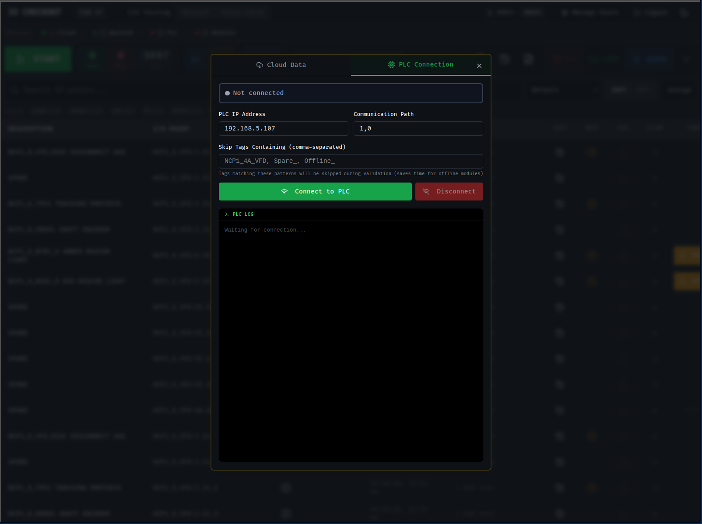
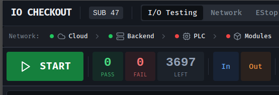
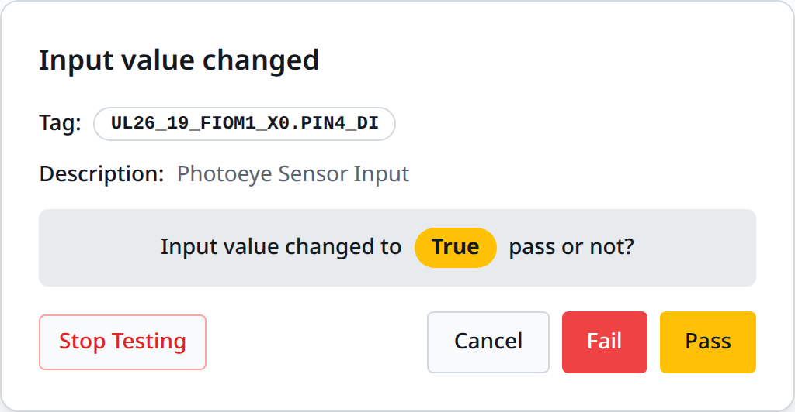
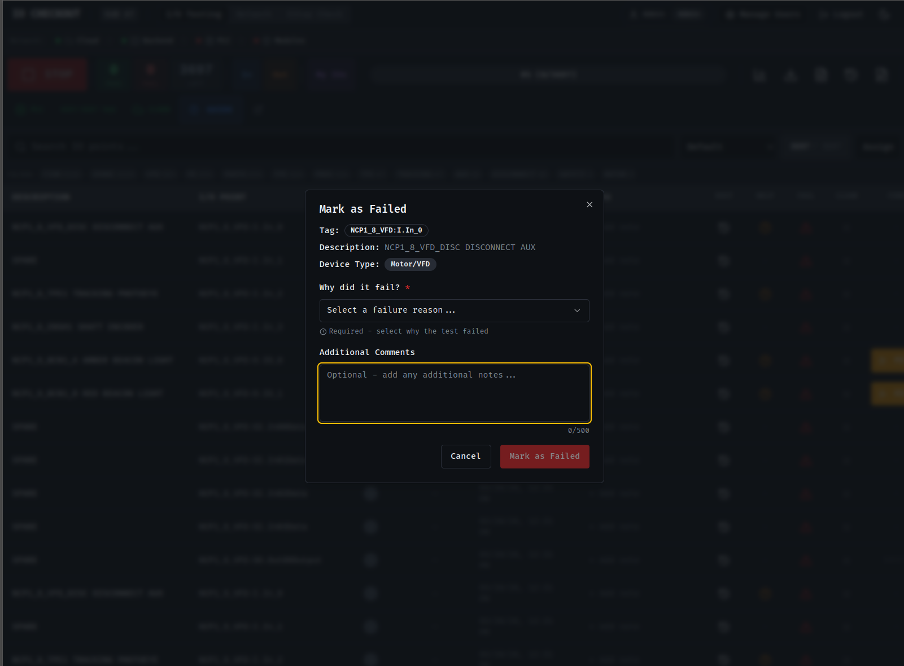
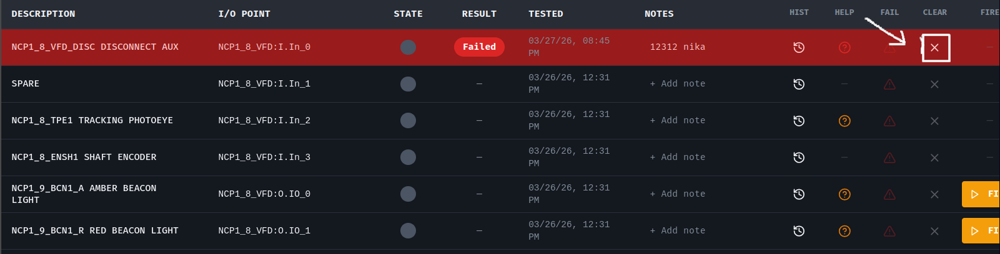
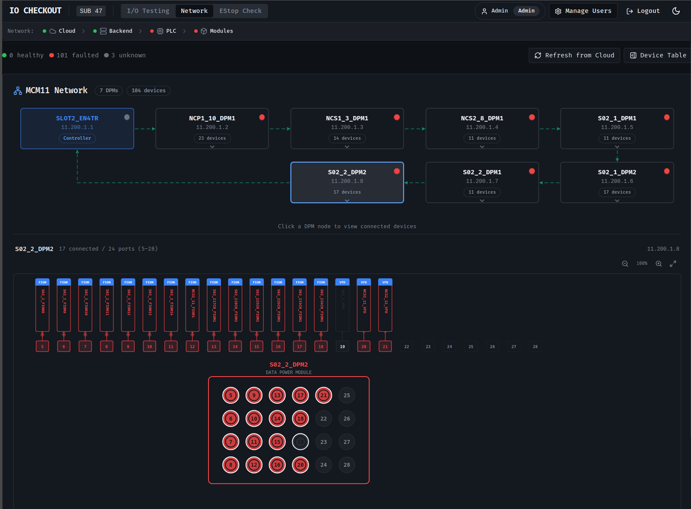

Setup & User Guide
Industrial I/O Commissioning Application
v2.9The IO Checkout Tool runs as a self-contained web application on a Windows machine. It can be deployed in two ways:
| Method | Best For | Auto-Start | Service |
|---|---|---|---|
| Portable Folder | Quick deployment, testing, temporary use | No | No |
| Windows Installer | Permanent installation, production use | Yes (on boot) | Yes |
Regardless of installation method, the first startup involves:
config.json file is generated111111Two ports are required for other devices (tablets, laptops) to connect:
| Port | Protocol | Purpose |
|---|---|---|
3000 | TCP | Web UI — technicians access this in their browser |
3002 | TCP | WebSocket — real-time PLC state updates |
START.bat runs. No manual firewall setup is needed.
The portable distribution is a single folder containing everything needed — no installation required.
START.bat in the portable folder. A command window will open showing startup logs.http://localhost:3000 (or http://SERVER_IP:3000 from another device).Close the command window that was opened by START.bat, or run STOP.bat.
Run STATUS.bat to see if the application is running and which IP addresses are available for other devices to connect.

portable/
START.bat ← Start the application (auto-opens firewall)
STOP.bat ← Stop the application
STATUS.bat ← Check if running + show IPs
SETUP-FIREWALL.bat ← Firewall rules (called by START.bat automatically)
config.json ← Configuration (auto-created)
database.db ← SQLite database (auto-created)
app/ ← Application files (do not modify)
node/ ← Bundled Node.js runtimeThe installer sets up IO Checkout as a Windows service that starts automatically on boot and restarts on crash.
.exe as Administrator.C:\Program Files\IOCheckout\.http://localhost:3000.| Item | Location |
|---|---|
| Database | C:\ProgramData\IOCheckout\database.db |
| Configuration | C:\ProgramData\IOCheckout\config.json |
| Logs | C:\ProgramData\IOCheckout\logs\ |
# Check service status
nssm status IOCheckout
# Restart the service
nssm restart IOCheckout
# Stop the service
nssm stop IOCheckout
# Or use Windows Services: services.msc → "IOCheckout"The application uses PIN-based authentication. No usernames — just a 6-digit numeric PIN.
http://SERVER_IP:3000
111111 — Change this immediately in Manage Users after first login.
Sessions last 8 hours. After that, you'll need to re-enter your PIN.
After first login with the default admin PIN, complete these steps to configure the system:
The cloud connection allows syncing IO definitions and test results with the central commissioning server.
https://commissioning.lci.ge).
After configuring the cloud connection, pull the IO definitions:
Configure the PLC connection to enable live tag reading:
11.200.1.1).1,0 for standard Allen-Bradley Ethernet/IP.Connection states:
| Indicator | Meaning |
|---|---|
| ● Green | Connected — PLC communication active, tags reading every 75ms |
| ● Amber | Reconnecting — PLC was lost, auto-reconnecting every 5 seconds |
| ● Gray | Disconnected — Not connected to PLC |

Create PIN accounts for each technician:
Testing mode must be started before IO states are monitored:
FALSE states show in gray, TRUE in green.
Input testing is automatic — the tool detects state changes from the PLC:
FALSE to TRUE in the app.
Output testing requires manually triggering the output from the app:
When an IO fails testing:

Comments can be added to any IO at any time — click the IO row and type in the comment field. Comments sync to the cloud automatically.
To re-test an IO that was already marked Pass or Fail:

The tool syncs test results with the cloud automatically:
| Direction | Timing | What Syncs |
|---|---|---|
| Local → Cloud | Instant (1-2 seconds) | Every Pass, Fail, Comment, Reset |
| Cloud → Local | Via SSE (real-time) | Results from other instances, admin changes |
If the cloud connection is lost:
Multiple local tool instances can test the same subsystem simultaneously. Results merge automatically — the cloud is the source of truth for shared data.
The Network tab displays the network devices connected to each DPM (Data Power Module) and their live connection status from the PLC.
ConnectionFaulted status from the PLC:

| Problem | Solution |
|---|---|
| Can't connect from tablet | Restart the app with START.bat (re-applies firewall rules). Check STATUS.bat for the correct IP. |
| PLC won't connect | Verify PLC IP and path (1,0). Check network cable. Ensure PLC is powered on. |
| IOs not showing | Pull IOs from cloud first. Check cloud URL and subsystem ID in configuration. |
| State not changing | Ensure testing mode is started (START button). Check PLC connection indicator. |
| Results not syncing | Check cloud status indicator. Verify cloud URL and API password. |
| App won't start | Check if port 3000 is in use: netstat -ano | findstr :3000. Kill the process or change port. |
| "Reconnecting" indicator | PLC lost connection — auto-reconnects every 5s. No action needed. |
| Forgot admin PIN | Delete database.db and restart (resets everything). Or contact system admin. |
| Port | Purpose | Firewall |
|---|---|---|
3000 | Web UI (HTTP) | Open |
3002 | WebSocket (real-time updates) | Open |
3102 | Internal broadcast API | Do NOT open |
| Account | PIN | Role |
|---|---|---|
| Admin | 111111 | Full access (config, PLC, users, cloud) |
| File | Purpose | Safe to Delete? |
|---|---|---|
database.db | All IO data, test results, users | No (resets everything) |
config.json | PLC IP, cloud URL, subsystem ID | No (lose configuration) |
logs/ | Application logs (auto-rotating) | Yes (recreated automatically) |
| Icon | Action | Access |
|---|---|---|
| Play/Stop | Start/Stop testing mode | All users |
| Plug | Connect/Disconnect PLC | Admin only |
| Cloud | Pull IOs from cloud | Admin only |
| Gear | Configuration (PLC, cloud settings) | Admin only |
| People | Manage user accounts | Admin only |
| Download | Export results to CSV | All users |
IO Checkout Tool v2.9 — Setup & User Guide
LCI Engineering • March 2026